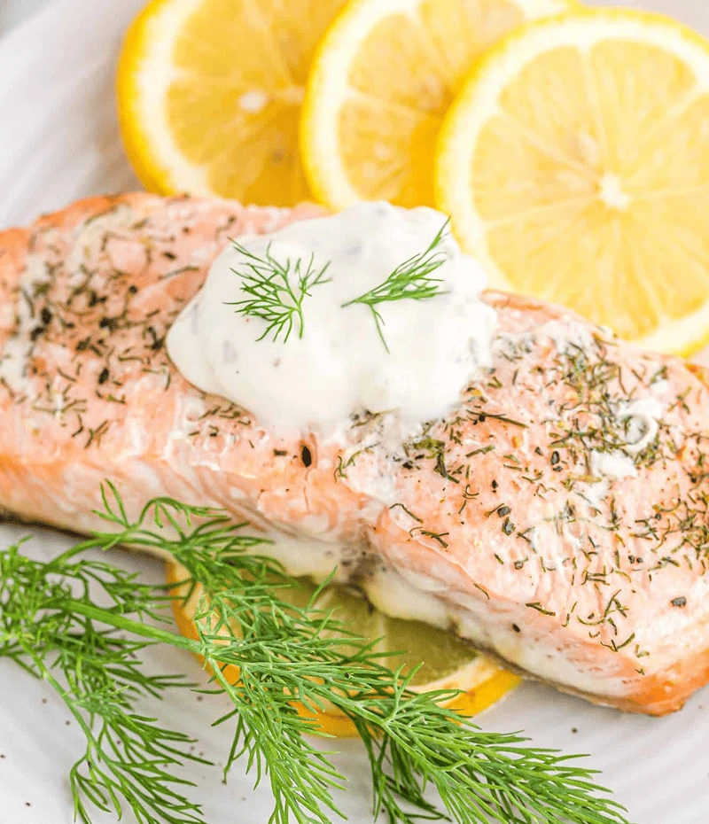

Baked Salmon with
Lemon & Dill
A healthy, protein-rich dinner with tender salmon baked in zesty lemon and fresh dill.
Ingredients
- 2 salmon fillets
- 1 lemon, sliced
- 2 tbsp fresh dill, chopped
- 1 tbsp olive oil
- Salt & pepper
Preparation
- Preheat oven to 200°C (390°F).
- Place salmon on a baking sheet lined with parchment.
- Drizzle with olive oil, season with salt and pepper.
- Top with lemon slices and dill.
- Bake for 15–18 minutes or until cooked through.
